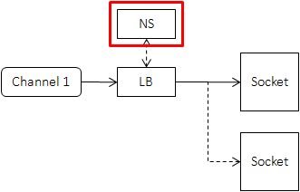
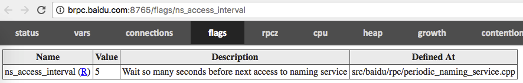
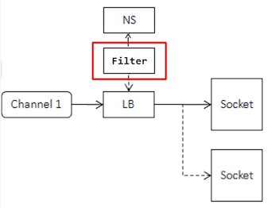
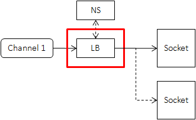
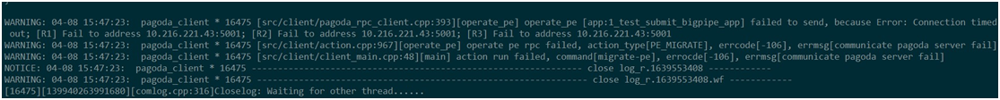
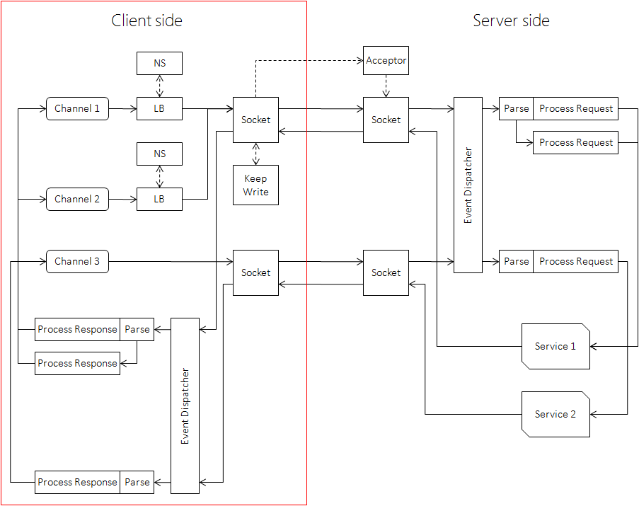

本文对应的示例是 example/echo_c++ 中的 client 端代码。
Client 指发起请求的一端，在 brpc 中没有对应的实体，取而代之的是 brpc::Channel，它代表和一台或一组服务器的交互通道。Client 和 Channel 在角色上的差别在实践中并不重要，你可以把 Channel 视作 Client。
Channel 可以被所有线程共用，你不需要为每个线程创建独立的 Channel，也不需要用锁互斥。不过 Channel 的创建和 Init 并不是线程安全的，请确保在 Init 成功后再被多线程访问，在没有线程访问后再析构。
一些 RPC 实现中有 ClientManager 的概念，包含了 Client 端的配置信息和资源管理。brpc 不需要这些，以往在 ClientManager 中配置的线程数、长短连接等等要么被加入了 brpc::ChannelOptions，要么可以通过 gflags 全局配置，这么做的好处是配置入口统一，类和代码更少，也更易于理解。
初始化 Channel
就像大部分类那样，Channel 必须在 Init 之后才能使用。options 为 NULL 时所有参数取默认值，如果你要使用非默认值，这么做就行了：
brpc::ChannelOptions options; // 包含了默认值
options.xxx = yyy;
...
channel.Init(..., &options);注意 Channel 不会修改 options，Init 结束后不会再访问 options，所以 options 一般就像上面代码中那样放栈上。Channel.options() 可以获得 channel 在使用的所有选项。
Init 函数分为连接一台服务器和连接服务集群两类。
连接单台服务器
// options为NULL时取默认值
int Init(EndPoint server_addr_and_port, const ChannelOptions* options);
int Init(const char* server_addr_and_port, const ChannelOptions* options);
int Init(const char* server_addr, int port, const ChannelOptions* options);这类 Init 连接的服务器往往有固定的 ip 地址，不需要命名服务和负载均衡，创建起来相对轻量。但是请勿频繁创建使用域名的 Channel，这需要查询 dns，可能最多耗时 10 秒（查询 DNS 的默认超时），请重用它们。
连接服务集群
int Init(const char* naming_service_url,
const char* load_balancer_name,
const ChannelOptions* options);这类 Channel 需要定期从 naming_service_url 指定的命名服务中获得服务器列表，并通过 load_balancer_name 指定的负载均衡算法选择出一台机器发送请求。
你不应该在每次请求前动态地创建此类（连接服务集群的）Channel，因为创建和析构此类 Channel 牵涉到较多的资源，比如在创建时得访问一次命名服务，否则便不知道有哪些服务器可选。由于 Channel 可被多个线程共用，一般也没有必要动态创建。
当 load_balancer_name 为 NULL 或空时，此 Init 等同于连接单台 server 的 Init，naming_service_url 应该是 ip:port 或 域名:port。你可以通过这个 Init 函数统一 Channel 的初始化方式：比如把 naming_service_url 和 load_balancer_name 放在配置文件中，要连接单台 server 时把 load_balancer_name 置空，要连接服务集群时则设置一个有效的算法名称。
命名服务
命名服务把一个名字映射为可修改的机器列表，在 client 端的位置如下：

有了命名服务后，client 记录的是一个名字，而不是每一台下游机器。当下游机器变化时，就只需要修改命名服务中的列表，而不需要逐台修改每个上游，这个过程也常被称为”解耦上下游”。当然在具体实现上，上游会记录每一台下游机器，并定期向命名服务请求或被推送最新的列表，以避免在 RPC 请求时才去访问命名服务。使用命名服务一般不会对访问性能造成影响，对命名服务的压力也很小。
naming_service_url 的一般形式是 protocol://service_name。
内置的命名服务
BNS：百度内常用的命名服务，比如 bns://rdev.matrix.all，其中 bns 是 protocol，rdev.matrix.all 是 service-name。相关的 gflag 是 -ns_access_interval：

如果 BNS 中显示不为空，但 Channel 却说找不到服务器，那么有可能 BNS 列表中的机器状态位（status）为非 0，含义为机器不可用，所以不会被加入到 server 候选集中。状态位可通过命令行查看：
get_instance_by_service [bns_node_name] -sfile：服务器列表放在 path 所在的文件里，比如 file://conf/machine_list 中的 conf/machine_list 对应一个文件：
# 此行会被忽略
10.24.234.17 tag1 # 这是注释，会被忽略
10.24.234.17 tag2 # 此行和上一行被认为是不同的实例
10.24.234.18
10.24.234.19优点：易于修改，方便单测。缺点：更新时需要修改每个上游的列表文件，不适合线上部署。
list：服务器列表直接跟在 list:// 之后，以逗号分隔。地址后可以声明 tag，用一个或多个空格分隔，相同的地址 + 不同的 tag 被认为是不同的实例。
优点：可在命令行中直接配置，方便单测。缺点：无法在运行时修改，完全不能用于线上部署。
http：连接一个域名下所有的机器，例如 www.baidu.com:80。注意连接单点的 Init（两个参数）虽然也可传入域名，但只会连接域名下的一台机器。
优点：DNS 的通用性，公网内网均可使用。缺点：受限于 DNS 的格式限制无法传递复杂的 meta 数据，也无法实现通知机制。
https：和 http 前缀类似，只是会自动开启 SSL。
consul：通过 consul 获取服务名称为 service-name 的服务列表。consul 的默认地址是 localhost:8500，可通过 gflag -consul_agent_addr 修改。consul 的连接超时时间默认是 200ms，可通过 -consul_connect_timeout_ms 修改。
默认在 consul 请求参数中添加 stale 和 passing（仅返回状态为 passing 的服务列表），可通过 gflag -consul_url_parameter 改变 consul 请求参数。
除了对 consul 的首次请求，后续对 consul 的请求都采用 long polling 的方式，即仅当服务列表更新或请求超时后 consul 才返回结果，这里超时时间默认为 60s，可通过 -consul_blocking_query_wait_secs 来设置。
若 consul 返回的服务列表响应格式有错误，或者列表中所有服务都因为地址、端口等关键字段缺失或无法解析而被过滤，consul naming server 会拒绝更新服务列表，并在一段时间后（默认 500ms，可通过 -consul_retry_interval_ms 设置）重新访问 consul。
如果 consul 不可访问，服务可自动降级到 file naming service 获取服务列表。此功能默认关闭，可通过设置 -consul_enable_degrade_to_file_naming_service 来打开。服务列表文件目录通过 -consul_file_naming_service_dir 来设置，使用 service-name 作为文件名。该文件可通过 consul-template 生成，里面会保存 consul 不可用之前最新的下游服务节点。当 consul 恢复时可自动恢复到 consul naming service。
自定义：用户可以通过实现 brpc::NamingService 来对接更多命名服务。
地址的 tag
每个地址可以附带一个 tag。在常见的命名服务中，如果地址后有空格，则空格之后的内容均为 tag。相同的地址配合不同的 tag 被认为是不同的实例，brpc 会建立不同的连接，用户可利用这个特性更灵活地控制与单个地址的连接方式。如果你需要”带权重的轮询”，你应当优先考虑使用 wrr 算法，而不是用 tag 来模拟。
使用 VIP 时的负载均衡
VIP 一般是 4 层负载均衡器的公网 ip，背后有多个 RS（Real Server）。当客户端连接至 VIP 时，VIP 会选择一个 RS 建立连接；当客户端连接断开时，VIP 也会断开与对应 RS 的连接。
如果客户端只与 VIP 建立一个连接（brpc 中的单连接），那么来自这个客户端的所有流量都会落到一台 RS 上。如果客户端的数量非常多，至少在集群的角度，所有的 RS 还是会分到足够多的连接，从而基本均衡。但如果客户端的数量不多，或客户端的负载差异很大，那么可能在个别 RS 上出现热点。另一个问题是当有多个 VIP 可选时，客户端分给它们的流量与各自后面的 RS 数量可能不一致。
解决这个问题的一种方法是使用连接池模式（pooled），这样客户端对一个 VIP 就可能建立多个连接（约为一段时间内的最大并发度），从而让负载落到多个 RS 上。如果有多个 VIP，可以用 wrr 负载均衡给不同的 VIP 声明不同的权重从而分到对应比例的流量，或给相同的 VIP 后加上多个不同的 tag 而被认为是多个不同的实例。
如果对性能有更高的要求，或要限制大集群中连接的数量，可以使用单连接并给相同的 VIP 加上不同的 tag 以建立多个连接。相比连接池一般连接数量更小，系统调用开销更低，但如果 tag 不够多，仍可能出现 RS 热点。
过滤命名服务的返回结果
当命名服务获得机器列表后，可以自定义一个过滤器进行筛选，最后把结果传递给负载均衡：

过滤器的接口如下：
// naming_service_filter.h
class NamingServiceFilter {
public:
// Return true to take this `server' as a candidate to issue RPC
// Return false to filter it out
virtual bool Accept(const ServerNode& server) const = 0;
};
// naming_service.h
struct ServerNode {
butil::EndPoint addr;
std::string tag;
};常见的业务策略如根据 server 的 tag 进行过滤。自定义的过滤器配置在 ChannelOptions 中，默认为 NULL（不过滤）：
class MyNamingServiceFilter : public brpc::NamingServiceFilter {
public:
bool Accept(const brpc::ServerNode& server) const {
return server.tag == "main";
}
};
int main() {
...
MyNamingServiceFilter my_filter;
...
brpc::ChannelOptions options;
options.ns_filter = &my_filter;
...
}负载均衡
当下游机器超过一台时，我们需要分割流量，此过程一般称为负载均衡，在 client 端的位置如下图所示：

理想的算法是每个请求都得到及时的处理，且任意机器 crash 对全局影响较小。但由于 client 端无法及时获得 server 端的延迟或拥塞，而且负载均衡算法不能耗费太多的 cpu，一般来说用户得根据具体的场景选择合适的算法。目前 rpc 提供的算法有（通过 load_balancer_name 指定）：
rr：即 round robin，总是选择列表中的下一台服务器，结尾的下一台是开头，无需其他设置。比如有 3 台机器 a、b、c，那么 brpc 会依次向 a、b、c、a、b、c… 发送请求。注意这个算法的前提是服务器的配置、网络条件、负载都是类似的。wrr：即 weighted round robin，根据服务器列表配置的权重值来选择服务器。服务器被选到的机会正比于其权重值，并且该算法能保证同一服务器被选到的结果较均衡地散开。random：随机从列表中选择一台服务器，无需其他设置。和 round robin 类似，这个算法的前提也是服务器都是类似的。la：locality-aware，优先选择延时低的下游，直到其延时高于其他机器，无需其他设置。c_murmurhash：一致性哈希，与简单 hash 的不同之处在于增加或删除机器时不会使分桶结果剧烈变化，特别适合 cache 类服务。
使用一致性哈希时，发起 RPC 前需要设置 Controller.set_request_code()，否则 RPC 会失败。request_code 一般是请求中主键部分的 32 位哈希值，不需要和负载均衡使用的哈希算法一致，比如用 c_murmurhash 算法也可以用 md5 计算哈希值。
src/brpc/policy/hasher.h 中包含了常用的 hash 函数。如果用 std::string key 代表请求的主键，controller.set_request_code(brpc::policy::MurmurHash32(key.data(), key.size())) 就正确地设置了 request_code。
注意甄别请求中的”主键”部分和”属性”部分，不要为了偷懒或通用，就把请求的所有内容一股脑儿计算出哈希值，属性的变化会使请求的目的地发生剧烈的变化。另外也要注意 padding 问题，比如 struct Foo { int32_t a; int64_t b; } 在 64 位机器上 a 和 b 之间有 4 个字节的空隙，内容未定义，如果像 hash(&foo, sizeof(foo)) 这样计算哈希值，结果就是未定义的，得把内容紧密排列或序列化后再算。
集群宕机后的恢复
集群宕机指的是集群中所有 server 都处于不可用的状态。由于健康检查机制，当集群恢复正常后，server 会间隔性地上线。当某一个 server 上线后，所有的流量会发送过去，可能导致服务再次过载。若熔断开启，则可能导致其它 server 上线前该 server 再次熔断，集群永远无法恢复。
作为解决方案，brpc 提供了在集群宕机后恢复时的限流机制：当集群中没有可用 server 时，集群进入恢复状态。假设正好能服务所有请求的 server 数量为 min_working_instances，当前集群可用的 server 数量为 q，则在恢复状态时，client 接受请求的概率为 q/min_working_instances，否则丢弃。若一段时间 hold_seconds 内 q 保持不变，则把流量重新发送到全部可用的 server 上，并离开恢复状态。在恢复阶段，可以通过判断 controller.ErrorCode() 是否等于 brpc::ERJECT 来判断该次请求是否被拒绝，被拒绝的请求不会被框架重试。
此恢复机制要求下游 server 的能力是类似的，所以目前只针对 rr 和 random 有效。开启方式是在 load_balancer_name 后面加上 min_working_instances 和 hold_seconds 参数的值，例如：
channel.Init("http://...", "random:min_working_instances=6 hold_seconds=10", &options);健康检查
连接断开的 server 会被暂时隔离而不会被负载均衡算法选中，brpc 会定期连接被隔离的 server，以检查它们是否恢复正常，间隔由参数 -health_check_interval 控制：
| Name | Value | Description | Defined At |
|---|---|---|---|
| health_check_interval （R） | 3 | seconds between consecutive health-checkings | src/brpc/socket_map.cpp |
在默认的配置下，一旦 server 被连接上，它会恢复为可用状态。brpc 还提供了应用层健康检查的机制：框架会发送一个 HTTP GET 请求到该 server，请求路径通过 -health_check_path 设置（默认为空），只有当 server 返回 200 时，它才会恢复。在两种健康检查机制下，都可通过 -health_check_timeout_ms 设置超时（默认 500ms）。如果在隔离过程中，server 从命名服务中删除了，brpc 也会停止连接尝试。
使用桩
一般来说，我们不直接调用 Channel.CallMethod，而是通过 protobuf 生成的桩 XXX_Stub，过程更像是”调用函数”。stub 内没什么成员变量，建议在栈上创建和使用，而不必 new，当然你也可以把 stub 存下来复用。Channel::CallMethod 和 stub 访问都是线程安全的，可以被所有线程同时访问。比如：
XXX_Stub stub(&channel);
stub.some_method(controller, request, response, done);甚至：
XXX_Stub(&channel).some_method(controller, request, response, done);一个例外是 http/h2 client。访问 http 服务和 protobuf 没什么关系，直接调用 CallMethod 即可，且 Controller 和 done 均为 NULL。
同步访问
同步访问指的是：CallMethod 会阻塞到收到 server 端返回 response 或发生错误（包括超时）。
同步访问中的 response/controller 不会在 CallMethod 后被框架使用，它们都可以分配在栈上。注意，如果 request/response 字段特别多字节数特别大的话，还是更适合分配在堆上。
MyRequest request;
MyResponse response;
brpc::Controller cntl;
XXX_Stub stub(&channel);
request.set_foo(...);
cntl.set_timeout_ms(...);
stub.some_method(&cntl, &request, &response, NULL);
if (cntl.Failed()) {
// RPC失败了. response里的值是未定义的，勿用。
} else {
// RPC成功了，response里有我们想要的回复数据。
}异步访问
异步访问指的是：给 CallMethod 传递一个额外的回调对象 done，CallMethod 在发出 request 后就结束了，而不是在 RPC 结束后。当 server 端返回 response 或发生错误（包括超时）时，done->Run() 会被调用。对 RPC 的后续处理应该写在 done->Run() 里，而不是 CallMethod 后。
由于 CallMethod 结束不意味着 RPC 结束，response/controller 仍可能被框架及 done->Run() 使用，它们一般得创建在堆上，并在 done->Run() 中删除。如果提前删除了它们，那当 done->Run() 被调用时，将访问到无效内存。
你可以独立地创建这些对象，并使用 NewCallback 生成 done，也可以把 Response 和 Controller 作为 done 的成员变量一起 new 出来，一般使用前一种方法。
发起异步请求后 Request 和 Channel 也可以立刻析构，这两样和 response/controller 是不同的。注意：这是说 Channel 的析构可以立刻发生在 CallMethod 之后，并不是说析构可以和 CallMethod 同时发生，删除正被另一个线程使用的 Channel 是未定义行为（很可能 crash）。
static void OnRPCDone(MyResponse* response, brpc::Controller* cntl) {
// unique_ptr会帮助我们在return时自动删掉response/cntl，防止忘记。gcc 3.4下的unique_ptr是模拟版本。
std::unique_ptr<MyResponse> response_guard(response);
std::unique_ptr<brpc::Controller> cntl_guard(cntl);
if (cntl->Failed()) {
// RPC失败了. response里的值是未定义的，勿用。
} else {
// RPC成功了，response里有我们想要的数据。开始RPC的后续处理。
}
// NewCallback产生的Closure会在Run结束后删除自己，不用我们做。
}
MyResponse* response = new MyResponse;
brpc::Controller* cntl = new brpc::Controller;
MyService_Stub stub(&channel);
MyRequest request; // 你不用new request,即使在异步访问中.
request.set_foo(...);
cntl->set_timeout_ms(...);
stub.some_method(cntl, &request, response, google::protobuf::NewCallback(OnRPCDone, response, cntl));由于 protobuf 3 把 NewCallback 设置为私有，r32035 后 brpc 把 NewCallback 独立于 src/brpc/callback.h（并增加了一些重载）。如果你的程序出现 NewCallback 相关的编译错误，把 google::protobuf::NewCallback 替换为 brpc::NewCallback 就行了。
使用 NewCallback 的缺点是要分配三次内存：response、controller、done。如果 profiler 证明这儿的内存分配有瓶颈，可以考虑自己继承 Closure，把 response/controller 作为成员变量，这样可以把三次 new 合并为一次，但缺点就是代码不够美观。如果内存分配不是瓶颈，别用这种方法：
class OnRPCDone : public google::protobuf::Closure {
public:
void Run() {
// unique_ptr会帮助我们在return时自动delete this，防止忘记。gcc 3.4下的unique_ptr是模拟版本。
std::unique_ptr<OnRPCDone> self_guard(this);
if (cntl->Failed()) {
// RPC失败了. response里的值是未定义的，勿用。
} else {
// RPC成功了，response里有我们想要的数据。开始RPC的后续处理。
}
}
MyResponse response;
brpc::Controller cntl;
};
OnRPCDone* done = new OnRPCDone;
MyService_Stub stub(&channel);
MyRequest request; // 你不用new request,即使在异步访问中.
request.set_foo(...);
done->cntl.set_timeout_ms(...);
stub.some_method(&done->cntl, &request, &done->response, done);回调的运行线程
回调运行在独立的 bthread 中，不会阻塞其他的逻辑，你可以在回调中做各种阻塞操作，没有特别的影响。
回调一定不在发起 RPC 的同一个线程里运行，即使该次 rpc 调用刚进去就失败了，回调也会在另一个 bthread 中运行。这可以在加锁进行 rpc（不推荐）的代码中避免死锁。
等待多个并发 RPC：Join
当你需要发起多个并发操作时，使用组合通道（如 ParallelChannel）可能更方便。如下代码发起两个异步 RPC 后等待它们完成：
const brpc::CallId cid1 = controller1->call_id();
const brpc::CallId cid2 = controller2->call_id();
...
stub.method1(controller1, request1, response1, done1);
stub.method2(controller2, request2, response2, done2);
...
brpc::Join(cid1);
brpc::Join(cid2);在发起 RPC 前调用 Controller.call_id() 获得一个 id，发起 RPC 调用后 Join 那个 id。
Join() 的行为是等到 RPC 结束且 done->Run() 运行后。一些 Join 的性质如下：
- Join() 在之前的版本叫做 JoinResponse()，如果你在编译时被提示 deprecated 之类的，修改为 Join()。
- 在 RPC 调用后
Join(controller->call_id())是错误的行为，一定要先把 call_id 保存下来，因为 RPC 调用后 controller 可能被随时开始运行的 done 删除。下面代码的 Join 方式是错误的：
static void on_rpc_done(Controller* controller, MyResponse* response) {
... Handle response ...
delete controller;
delete response;
}
Controller* controller1 = new Controller;
Controller* controller2 = new Controller;
MyResponse* response1 = new MyResponse;
MyResponse* response2 = new MyResponse;
...
stub.method1(controller1, &request1, response1, google::protobuf::NewCallback(on_rpc_done, controller1, response1));
stub.method2(controller2, &request2, response2, google::protobuf::NewCallback(on_rpc_done, controller2, response2));
...
brpc::Join(controller1->call_id()); // 错误，controller1可能被on_rpc_done删除了
brpc::Join(controller2->call_id()); // 错误，controller2可能被on_rpc_done删除了Join 可用来实现”半同步”访问，即等待多个异步访问完成。由于调用处的代码会等到所有 RPC 都结束后再醒来，所以 controller 和 response 都可以放栈上：
brpc::Controller cntl1;
brpc::Controller cntl2;
MyResponse response1;
MyResponse response2;
...
stub1.method1(&cntl1, &request1, &response1, brpc::DoNothing());
stub2.method2(&cntl2, &request2, &response2, brpc::DoNothing());
...
brpc::Join(cntl1.call_id());
brpc::Join(cntl2.call_id());brpc::DoNothing() 可获得一个什么都不干的 done，专门用于半同步访问，它的生命周期由框架管理，用户不用关心。
注意在上面的代码中，我们在 RPC 结束后又访问了 controller.call_id()，这是没有问题的，因为 DoNothing 中并不会像上节中的 on_rpc_done 那样删除 Controller。
取消 RPC
brpc::StartCancel(call_id) 可取消对应的 RPC，call_id 必须在发起 RPC 前通过 Controller.call_id() 获得，其他时刻都可能有 race condition。
注意：是 brpc::StartCancel(call_id)，不是 controller->StartCancel()，后者被禁用，没有效果。后者是 protobuf 默认提供的接口，但是在 controller 对象的生命周期上有严重的竞争问题。
顾名思义，StartCancel 调用完成后 RPC 并未立刻结束，你不应该碰触 Controller 的任何字段或删除任何资源，它们自然会在 RPC 结束时被 done 中对应逻辑处理。如果你一定要在原地等到 RPC 结束（一般不需要），则可通过 Join(call_id)。
获取对端和本地地址
remote_side() 方法可知道 request 被送向了哪个 server，返回值类型是 butil::EndPoint，包含一个 ip4 地址和端口。在 RPC 结束前调用这个方法都是没有意义的。打印方式：
LOG(INFO) << "remote_side=" << cntl->remote_side();
printf("remote_side=%s\n", butil::endpoint2str(cntl->remote_side()).c_str());r31384 后通过 local_side() 方法可在 RPC 结束后获得发起 RPC 的地址和端口。打印方式：
LOG(INFO) << "local_side=" << cntl->local_side();
printf("local_side=%s\n", butil::endpoint2str(cntl->local_side()).c_str());重用 Controller
不用刻意地重用，但 Controller 是个大杂烩，可能会包含一些缓存，Reset() 可以避免反复地创建这些缓存。
在大部分场景下，构造 Controller（snippet1）和重置 Controller（snippet2）的性能差异不大：
// snippet1
for (int i = 0; i < n; ++i) {
brpc::Controller controller;
...
stub.CallSomething(..., &controller);
}
// snippet2
brpc::Controller controller;
for (int i = 0; i < n; ++i) {
controller.Reset();
...
stub.CallSomething(..., &controller);
}但如果 snippet1 中的 Controller 是 new 出来的，那么 snippet1 就会多出”内存分配”的开销，在一些情况下可能会慢一些。
调用 Reset 方法可让 Controller 回到刚创建时的状态。别在 RPC 结束前重置 Controller，行为是未定义的。
Client 端的设置
Client 端的设置主要由三部分组成：Controller（一次 RPC 内的选项与数据）、ChannelOptions（一个 Channel 上所有 RPC 共享的选项）和 gflags（全局配置）。
Controller
Controller 包含了 request 中没有的数据和选项。server 端和 client 端的 Controller 结构体是一样的，但使用的字段可能是不同的，你需要仔细阅读 Controller 中的注释，明确哪些字段可以在 server 端使用，哪些可以在 client 端使用。
一个 Controller 对应一次 RPC。一个 Controller 可以在 Reset() 后被另一个 RPC 复用，但一个 Controller 不能被多个 RPC 同时使用（不论是否在同一个线程发起）。
和大部分的 RPC 框架不同，brpc 中并没有独立的 Client 线程池，所有 Channel 和 Server 通过 bthread 共享相同的线程池。如果你的程序同样使用了 brpc 的 server，仅仅需要设置 Server 的线程数；或者可以通过 gflag -bthread_concurrency 来设置全局的线程数。
超时
ChannelOptions.timeout_ms 是对应 Channel 上所有 RPC 的总超时，Controller.set_timeout_ms() 可修改某次 RPC 的值。单位毫秒，默认值 1 秒，最大值 2^31（约 24 天），-1 表示一直等到回复或错误。
ChannelOptions.connect_timeout_ms 是对应 Channel 上所有 RPC 的连接超时（单位毫秒）。-1 表示等到连接建立或出错，此值被限制为不能超过 timeout_ms。注意此超时独立于 TCP 的连接超时，一般来说前者小于后者，反之则可能在 connect_timeout_ms 未达到前由于 TCP 连接超时而出错。
注意：brpc 中的超时是 deadline，超过就意味着 RPC 结束，超时后没有重试。其他实现可能既有单次访问的超时，也有代表 deadline 的超时，迁移到 brpc 时请仔细区分。
注意：RPC 超时的错误码为
ERPCTIMEDOUT（1008），ETIMEDOUT的意思是连接超时，且可重试。
重试
ChannelOptions.max_retry 是该 Channel 上所有 RPC 的默认最大重试次数，Controller.set_max_retry() 可修改某次 RPC 的值，默认值 3，0 表示不重试。
- r32111 后
Controller.retried_count()返回重试次数。 - r34717 后
Controller.has_backup_request()获知是否发送过 backup request。 - 重试时框架会尽量避开之前尝试过的 server。
重试的触发条件之间是 AND 关系。如果 server 一直没有返回，但连接没有问题，这种情况下不会重试。如果你需要在一定时间后发送另一个请求，使用 backup request。
backup request 的工作机制如下：如果 response 没有在 backup_request_ms 内返回，则发送另外一个请求，哪个先回来就取哪个。新请求会被尽量送到不同的 server。注意如果 backup_request_ms 大于超时，则 backup request 总不会被发送。backup request 会消耗一次重试次数。backup request 不意味着 server 端 cancel。
ChannelOptions.backup_request_ms 影响该 Channel 上所有 RPC，单位毫秒，默认值 -1（表示不开启），Controller.set_backup_request_ms() 可修改某次 RPC 的值。
超时后 RPC 会尽快结束。Controller.set_max_retry(0) 或 ChannelOptions.max_retry=0 关闭重试。
一些错误重试是没有意义的，就不会重试，比如请求有错时（EREQUEST）不会重试，因为 server 总不会接受，没有意义。
用户可以通过继承 brpc::RetryPolicy 自定义重试条件。比如 brpc 默认不重试 http/h2 相关的错误，而你的程序中希望在碰到 HTTP_STATUS_FORBIDDEN（403）时重试，可以这么做：
#include <brpc/retry_policy.h>
class MyRetryPolicy : public brpc::RetryPolicy {
public:
bool DoRetry(const brpc::Controller* cntl) const {
if (cntl->ErrorCode() == brpc::EHTTP && // http/h2错误
cntl->http_response().status_code() == brpc::HTTP_STATUS_FORBIDDEN) {
return true;
}
// 把其他情况丢给框架。
return brpc::DefaultRetryPolicy()->DoRetry(cntl);
}
};
...
// 给ChannelOptions.retry_policy赋值就行了。
// 注意：retry_policy必须在Channel使用期间保持有效，Channel也不会删除retry_policy，所以大部分情况下RetryPolicy都应以单例模式创建。
brpc::ChannelOptions options;
static MyRetryPolicy g_my_retry_policy;
options.retry_policy = &g_my_retry_policy;注意：由于成本的限制，大部分线上 server 的冗余度是有限的，主要是满足多机房互备的需求。而激进的重试逻辑很容易导致众多 client 对 server 集群造成 2-3 倍的压力，最终使集群雪崩：由于 server 来不及处理导致队列越积越长，使所有的请求得经过很长的排队才被处理而最终超时，相当于服务停摆。默认的重试是比较安全的：只要连接不断 RPC 就不会重试，一般不会产生大量的重试请求。用户可以通过 RetryPolicy 定制重试策略，但也可能使重试变成一场”风暴”。当你定制 RetryPolicy 时，你需要仔细考虑 client 和 server 的协作关系，并设计对应的异常测试，以确保行为符合预期。
如果担心下游故障影响自身，可以进一步了解 brpc 的熔断机制（circuit breaker）。
协议
Channel 的默认协议是 baidu_std，可通过设置 ChannelOptions.protocol 换为其他协议，这个字段既接受 enum 也接受字符串。目前支持的有 baidu_std、HTTP、hulu_pbrpc、redis、memcache 等多种协议。
连接方式
brpc 支持以下连接方式：
| 短连接 | 连接池 | 单连接 | |
|---|---|---|---|
| 长连接 | 否 | 是 | 是 |
| server 端连接数（单 client） | qps*latency（原理见 Little’s law） | qps*latency | 1 |
| 极限 qps | 差，且受限于单机端口数 | 中等 | 高 |
| latency | 1.5RTT(connect) + 1RTT + 处理时间 | 1RTT + 处理时间 | 1RTT + 处理时间 |
| cpu 占用 | 高，每次都要 tcp connect | 中等，每个请求都要一次 sys write | 低，合并写出在大流量时减少 cpu 占用 |
框架会为协议选择默认的连接方式，用户一般不用修改。若需要，把 ChannelOptions.connection_type 设为对应的值即可。
brpc 支持 Streaming RPC，这是一种应用层的连接，用于传递流式数据。
闲置连接的清理
当连接池中的某个连接在 -idle_timeout_second 时间内没有读写，则被视作”闲置”，会被自动关闭，默认值为 10 秒。此功能只对连接池（pooled）有效。打开 -log_idle_connection_close 在关闭前会打印一条日志。
| Name | Value | Description | Defined At |
|---|---|---|---|
| idle_timeout_second | 10 | Pooled connections without data transmission for so many seconds will be closed. No effect for non-positive values | src/brpc/socket_map.cpp |
| log_idle_connection_close | false | Print log when an idle connection is closed | src/brpc/socket.cpp |
连接的延迟关闭
多个 channel 可能通过引用计数引用同一个连接，当引用某个连接的最后一个 channel 析构时，该连接将被关闭。但在一些场景中，channel 在使用前才被创建，用完立刻析构，这时其中一些连接就会被无谓地关闭再被打开，效果类似短连接。
一个解决办法是用户把所有或常用的 channel 缓存下来，这样自然能避免 channel 频繁产生和析构，但目前 brpc 没有提供这样一个 utility，用户自己（正确）实现有一些工作量。
另一个解决办法是设置全局选项 -defer_close_second：
| Name | Value | Description | Defined At |
|---|---|---|---|
| defer_close_second | 0 | Defer close of connections for so many seconds even if the connection is not used by anyone. Close immediately for non-positive values | src/brpc/socket_map.cpp |
设置后引用计数清 0 时连接并不会立刻被关闭，而是会等待这么多秒再关闭，如果在这段时间内又有 channel 引用了这个连接，它会恢复正常被使用的状态。不管 channel 创建析构有多频繁，这个选项使得关闭连接的频率有上限。这个选项的副作用是一些 fd 不会被及时关闭，如果延时被误设为一个大数值，程序占据的 fd 个数可能会很大。
socket 缓冲区大小
-socket_recv_buffer_size 设置所有连接的接收缓冲区大小，默认 -1（不修改）；-socket_send_buffer_size 设置所有连接的发送缓冲区大小，默认 -1（不修改）。
| Name | Value | Description | Defined At |
|---|---|---|---|
| socket_recv_buffer_size | -1 | Set the recv buffer size of socket if this value is positive | src/brpc/socket.cpp |
| socket_send_buffer_size | -1 | Set send buffer size of sockets if this value is positive | src/brpc/socket.cpp |
log_id
通过 set_log_id() 可设置 64 位整型 log_id。这个 id 会和请求一起被送到服务器端，一般会被打在日志里，从而把一次检索经过的所有服务串联起来。字符串格式的需要转化为 64 位整型才能设入 log_id。
附件（attachment）
baidu_std 和 hulu_pbrpc 协议支持附件，这段数据由用户自定义，不经过 protobuf 的序列化。站在 client 的角度，设置在 Controller::request_attachment() 的附件会被 server 端收到，response_attachment() 则包含了 server 端送回的附件。附件不受压缩选项影响。
在 http/h2 协议中，附件对应 message body，比如要 POST 的数据就设置在 request_attachment() 中。
SSL
要开启 SSL，首先确保代码依赖了最新的 openssl 库。如果 openssl 版本很旧，会有严重的安全漏洞，支持的加密算法也少，违背了开启 SSL 的初衷。然后设置 ChannelOptions.mutable_ssl_options()，具体选项见 ssl_options.h。ChannelOptions.has_ssl_options() 可查询是否设置过 ssl_options，ChannelOptions.ssl_options() 可访问到设置过的只读 ssl_options。
// 开启客户端SSL并使用默认值。
options.mutable_ssl_options();
// 开启客户端SSL并定制选项。
options.mutable_ssl_options()->ciphers_name = "...";
options.mutable_ssl_options()->sni_name = "...";客户端认证
client 端的认证一般分为 2 种：
- 将认证的格式定义加到请求结构体中，每次当做正常 RPC 发送出去即可。
- 通过 brpc 提供的认证机制，继承实现
Authenticator：
class Authenticator {
public:
virtual ~Authenticator() {}
// Implement this method to generate credential information
// into `auth_str' which will be sent to `VerifyCredential'
// at server side. This method will be called on client side.
// Returns 0 on success, error code otherwise
virtual int GenerateCredential(std::string* auth_str) const = 0;
};当用户并发调用 RPC 接口用单连接往同一个 server 发请求时，框架会自动保证：建立 TCP 连接后，连接上的第一个请求中会带有上述 GenerateCredential 产生的认证包，其余剩下的并发请求不会带有认证信息，依次排在第一个请求之后。整个发送过程依旧是并发的，并不会等第一个请求先返回。若 server 端认证成功，那么所有请求都能成功返回；若认证失败，一般 server 端则会关闭连接，这些请求则会收到相应错误。
目前自带协议中支持客户端认证的有：baidu_std（默认协议）、HTTP、hulu_pbrpc、ESP。对于自定义协议，一般可以在组装请求阶段调用 Authenticator 接口生成认证串，来支持客户端认证。
压缩
set_request_compress_type() 设置 request 的压缩方式，默认不压缩。
注意：附件不会被压缩。http/h2 body 的压缩另有专门方法。
支持的压缩方法有 snappy、gzip、zlib。
下表是多种压缩算法应对重复率很高的数据时的性能，仅供参考：
| Compress method | Compress size(B) | Compress time(us) | Decompress time(us) | Compress throughput(MB/s) | Decompress throughput(MB/s) | Compress ratio |
|---|---|---|---|---|---|---|
| Snappy | 128 | 0.753114 | 0.890815 | 162.0875 | 137.0322 | 37.50% |
| Gzip | 10.85185 | 1.849199 | 11.2488 | 66.01252 | 47.66% | |
| Zlib | 10.71955 | 1.66522 | 11.38763 | 73.30581 | 38.28% | |
| Snappy | 1024 | 1.404812 | 1.374915 | 695.1555 | 710.2713 | 8.79% |
| Gzip | 16.97748 | 3.950946 | 57.52106 | 247.1718 | 6.64% | |
| Zlib | 15.98913 | 3.06195 | 61.07665 | 318.9348 | 5.47% | |
| Snappy | 16384 | 8.822967 | 9.865008 | 1770.946 | 1583.881 | 4.96% |
| Gzip | 160.8642 | 43.85911 | 97.13162 | 356.2544 | 0.78% | |
| Zlib | 147.6828 | 29.06039 | 105.8011 | 537.6734 | 0.71% | |
| Snappy | 32768 | 16.16362 | 19.43596 | 1933.354 | 1607.844 | 4.82% |
| Gzip | 229.7803 | 82.71903 | 135.9995 | 377.7849 | 0.54% | |
| Zlib | 240.7464 | 54.44099 | 129.8046 | 574.0161 | 0.50% |
下表是多种压缩算法应对重复率很低的数据时的性能，仅供参考：
| Compress method | Compress size(B) | Compress time(us) | Decompress time(us) | Compress throughput(MB/s) | Decompress throughput(MB/s) | Compress ratio |
|---|---|---|---|---|---|---|
| Snappy | 128 | 0.866002 | 0.718052 | 140.9584 | 170.0021 | 105.47% |
| Gzip | 15.89855 | 4.936242 | 7.678077 | 24.7294 | 116.41% | |
| Zlib | 15.88757 | 4.793953 | 7.683384 | 25.46339 | 107.03% | |
| Snappy | 1024 | 2.087972 | 1.06572 | 467.7087 | 916.3403 | 100.78% |
| Gzip | 32.54279 | 12.27744 | 30.00857 | 79.5412 | 79.79% | |
| Zlib | 31.51397 | 11.2374 | 30.98824 | 86.90288 | 78.61% | |
| Snappy | 16384 | 12.598 | 6.306592 | 1240.276 | 2477.566 | 100.06% |
| Gzip | 537.1803 | 129.7558 | 29.08707 | 120.4185 | 75.32% | |
| Zlib | 519.5705 | 115.1463 | 30.07291 | 135.697 | 75.24% | |
| Snappy | 32768 | 22.68531 | 12.39793 | 1377.543 | 2520.582 | 100.03% |
| Gzip | 1403.974 | 258.9239 | 22.25825 | 120.6919 | 75.25% | |
| Zlib | 1370.201 | 230.3683 | 22.80687 | 135.6524 | 75.21% |
常见问题
能否使用 unix domain socket
不能。同机 TCP socket 并不走网络，相比 unix domain socket 性能只会略微下降。一些不能用 TCP socket 的特殊场景可能会需要，以后可能会扩展支持。
Connection refused
Q: Fail to connect to xx.xx.xx.xx:xxxx, Connection refused
一般是对端 server 没打开端口（很可能挂了）。连接超时的报错日志一般如下：

这个就是连接超时了，调大连接和 RPC 超时：
struct ChannelOptions {
...
// Issue error when a connection is not established after so many
// milliseconds. -1 means wait indefinitely.
// Default: 200 (milliseconds)
// Maximum: 0x7fffffff (roughly 30 days)
int32_t connect_timeout_ms;
// Max duration of RPC over this Channel. -1 means wait indefinitely.
// Overridable by Controller.set_timeout_ms().
// Default: 500 (milliseconds)
// Maximum: 0x7fffffff (roughly 30 days)
int32_t timeout_ms;
...
};注意：连接超时不是 RPC 超时，RPC 超时打印的日志是 “Reached timeout=…”。
高并发下 core
重点检查 Controller、Response 和 done 的生命周期。在异步访问中，RPC 调用结束并不意味着 RPC 整个过程结束，而是在进入 done->Run() 时才会结束。所以这些对象不应在调用 RPC 后就释放，而是要在 done->Run() 里释放。你一般不能把这些对象分配在栈上，而应该分配在堆上，详见异步访问一节。
写操作与幂等
这不是 RPC 层面的事情。当 response 返回且成功时，我们确认这个过程一定成功了；当 response 返回且失败时，我们确认这个过程一定失败了；但当 response 没有返回时，它可能失败，也可能成功。如果我们选择重试，那一个成功的过程也可能会被再执行一次。
一般来说带副作用的 RPC 服务都应当考虑幂等问题，否则重试可能会导致多次叠加副作用而产生意想不到的结果。只有读的检索服务大都没有副作用而天然幂等，无需特殊处理；而带写的存储服务则要在设计时就加入版本号或序列号之类的机制以拒绝已经发生的过程，保证幂等。
Invalid address
Q: Invalid address=`bns://group.user-persona.dumi.nj03’
FATAL 04-07 20:00:03 7778 src/brpc/channel.cpp:123] Invalid address=`bns://group.user-persona.dumi.nj03'. You should use Init(naming_service_name, load_balancer_name, options) to access multiple servers.访问命名服务要使用三个参数的 Init，其中第二个参数是 load_balancer_name，而这里用的是两个参数的 Init，框架认为是访问单点，就会报这个错。
协议 != protobuf
协议 != protobuf。protobuf 负责一个包的序列化，协议中的一个消息可能会包含多个 protobuf 包，以及额外的长度、校验码、magic number 等等。打包格式相同不意味着协议可以互通。在 brpc 中写一份代码就能服务多协议的能力是通过把不同协议的数据转化为统一的编程接口完成的，而不是在 protobuf 层面。
与其他语言互通报序列化错误
Q: 为什么 C++ client/server 能够互相通信，和其他语言的 client/server 通信会报序列化失败的错误？
检查一下 C++ 版本是否开启了压缩（Controller::set_compress_type），目前其他语言的 rpc 框架还没有实现压缩，互相返回会出现问题。
一次 RPC 的主要步骤
最后通过一幅图了解 brpc 中一次 RPC 的主要步骤：
